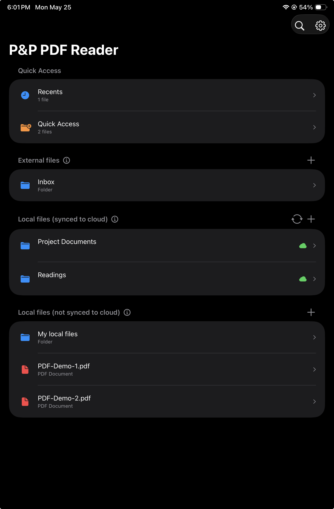

Home view
Open recent PDFs, pin important documents, and choose where files live.
Reading starts here
A simple home screen for active documents.
Three ways to import PDFs:
- External files (kept on cloud*, no local copies)
- Local files, synced to cloud
- Local files, not synced to cloud
The Home view keeps the user's current reading work close at hand. Important PDFs can be pinned to Quick Access, recently viewed files stay available, and document sources are grouped by how they sync and where they are stored.
* Only Dropbox currently supported
Quick Access
Users can add PDFs to a Quick Access list for documents they return to often.
Recents
Recently viewed PDFs appear here when they are not already in Quick Access.

External files
For PDFs that remain in the cloud.
This feature is currently experimental and may contain some suboptimal behavior.
Best use case
Best when one needs to annotate a PDF across devices, including different tablets and desktop applications, while working.
Also useful when the PDF should sync constantly during reading and annotation work.
Main features
- Annotations are synced to the cloud automatically and nearly immediately while editing the PDF.
- No local copies: files and folders remain in the cloud only, such as on Dropbox.
Advantages
- No need to trigger sync manually.
- Keeps an up-to-date version in the cloud and in the app when an internet connection is available.
Disadvantages
- Requires an internet connection.
- Folders and PDFs are not available offline.
- Not persistent: folders remain in the cloud with no local copy, so they can disappear from the app when it is closed or not used for a while, requiring the folder to be imported again.
Privacy
- Users own their PDFs and annotations.
- No PDF or annotation is ever collected or stored on app servers.
- No user data is ever collected.
Local files, synced to cloud
For offline annotation with manual cloud sync.
Best use case
- Sync to the cloud eventually or after annotation is finished.
- Keep files available for reading and annotating offline, even without an internet connection.
- Perform heavy annotation, such as constantly adding highlights and handwritten notes.
Main features
- Local copies of PDFs are saved on the device.
- The annotation experience is quick and reliable.
- Manual sync is required. It can be triggered in many ways, including from the PDF view itself using an edge gesture, which defaults to a long press on region R8.
Advantages
- Imported files and folders are persistent in the app.
- Offers the best performance for annotation.
- Files are available offline.
Disadvantages
- Consumes device storage space.
- Requires manual sync.
Privacy
- Users own their PDFs and annotations.
- No PDFs or annotations are ever collected or stored on the app's servers.
- No user data is ever collected.
Local files, not synced to cloud
For documents that should stay on the device.
Best use case
Best when users need to keep files local to the device without cloud sync.
Privacy
- Users own their PDFs and annotations.
- No copies of PDFs or annotations are ever collected or stored on the app's servers.
- No user data is ever collected.